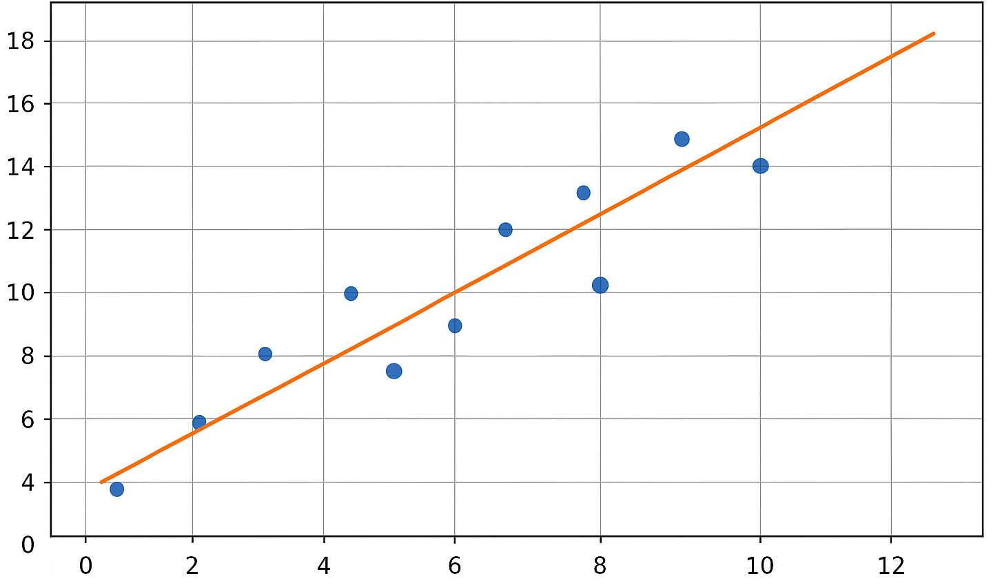
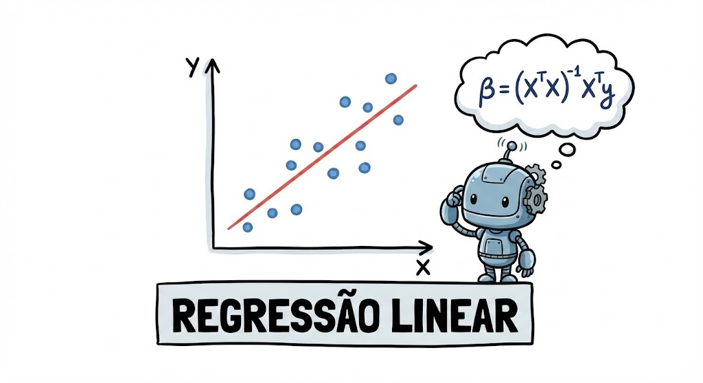

Regressão Linear

Objetivo da atividade
A proposta desta atividade foi trabalhar com o conceito de regressão linear utilizando um conjunto de dados fornecidos. A ideia foi analisar a relação entre duas variáveis, neste caso, valores de x e y simulando anos de estudo e salário e, a partir disso, ajustar uma reta que melhor descreve essa relação. Para isso, foi solicitado que o cálculo fosse feito por meio da fórmula matricial da regressão linear, sem utilizar funções prontas. Depois, os resultados deveriam ser apresentados em um gráfico contendo tanto os pontos originais quanto a linha estimada.
A partir dessas orientações, segue o código:
import numpy as np
import pandas as pd
from plotnine import ggplot, aes, geom_point, geom_abline
from PIL import Image
from pathlib import Path # Importa para lidar com caminhos
# 1. Carregar os dados
# Descobre o diretório do script e constrói o caminho para os arquivos x.txt e y.txt
try:
# Obtém o diretório do script
diretorio_script = Path(__file__).resolve().parent
# Constrói o caminho completo para os arquivos
caminho_x = diretorio_script / "x.txt"
caminho_y = diretorio_script / "y.txt"
# Carrega os dados usando o caminho absoluto
X = np.loadtxt(caminho_x)
y = np.loadtxt(caminho_y)
except NameError:
# Usa a abordagem de caminho relativo como fallback, que é a original.
X = np.loadtxt("x.txt")
y = np.loadtxt("y.txt")
# Garante que X seja uma matriz coluna
X = X.reshape(-1, 1)
# 2. Adicionar coluna de 1s para o intercepto
X_b = np.hstack([np.ones((X.shape[0], 1)), X])
# 3. Fórmula matricial da regressão linear
beta = np.linalg.inv(X_b.T @ X_b) @ X_b.T @ y
a = beta[0] # intercepto
b = beta[1] # coeficiente angular
print(f"Intercepto (a): {a}")
print(f"Slope (b): {b}")
# 4. Gerar gráfico
df = pd.DataFrame({"x": X.flatten(), "y": y})
plot = (
ggplot(df, aes("x", "y"))
+ geom_point()
+ geom_abline(intercept=a, slope=b)
)
# 5. Salvar gráfico
plot.save("grafico.png")
# 6. Abre o gráfico automaticamente
img = Image.open("grafico.png")
img.show()Finalizando a atividade
Após organizar os dados e montar a matriz do modelo, apliquei diretamente a fórmula matricial da regressão linear para obter os coeficientes da reta, representados pelo intercepto e pela inclinação. Com esses valores calculados, foi criado um gráfico mostrando os pontos fornecidos e a linha ajustada. O código utilizado faz exatamente o que foi pedido: calcula os parâmetros da regressão a partir da álgebra matricial e gera um gráfico final que permite visualizar a tendência da relação entre as variáveis.
